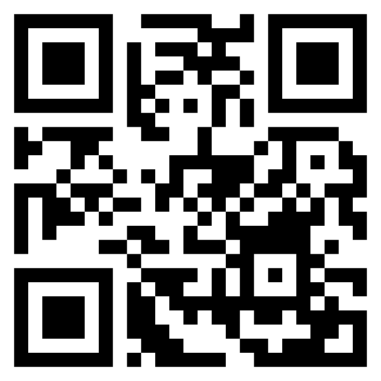

<section class="slide" id="get-the-code" data-section="Push for more" data-title="Get the repo">
  <div class="split split--even">
    <div class="text">
      <div class="eyebrow">Get started</div>
      <h2 class="title">Get the <em>repo</em></h2>
      <p class="hint"><b>Or type this</b><code class="qr-path">github.com/your-handle/your-repo</code></p>
      <ol class="pipe pipe--text">
        <li><b>01</b><span><strong>Clone it.</strong> One command.</span></li>
        <li><b>02</b><span><strong>Run the setup.</strong> Five minutes.</span></li>
        <li><b>03</b><span><strong>Open the first task.</strong> It’s in the README.</span></li>
      </ol>
    </div>
    <div class="media" style="display:grid;justify-items:center">
      <div class="qr">
        <a class="qr-link" href="https://example.com/repo"><span class="qr-card"></span></a>
        <span class="qr-label">Scan to open the repo</span>
        <span class="qr-url">example.com/repo</span>
      </div>
    </div>
  </div>
  <aside class="notes">
    <p><b>6:00–6:30.</b> Leave it up for ten seconds. Say the path out loud for anyone who can’t scan.</p>
    <p class="src"><code>.qr</code> wraps <code>a.qr-link</code> (the link goes around the card, and QA decodes the image and compares it with the <code>href</code>), then the label and the URL text. Make the image with <code>swift tools/qr.swift &lt;url&gt; &lt;out.png&gt;</code>.</p>
  </aside>
</section>
